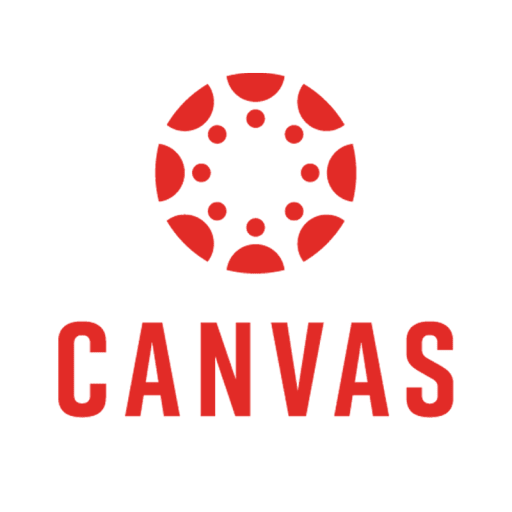

Canvas Student is een mobiele app die is ontworpen voor studenten die gebruikmaken van het Canvas-leermanagementsysteem. Met de app kunnen studenten hun cursussen, opdrachten, mededelingen en cijfers op een overzichtelijke manier beheren. Belangrijke functies van Canvas Student zijn onder andere: Toegang tot cursusmateriaal: Studenten kunnen lesmateriaal, zoals documenten en video's, bekijken. Inzichten in opdrachten: Het indienen van opdrachten en het bijhouden van deadlines is eenvoudig. Communicatie: Studenten kunnen berichten sturen naar docenten en medestudenten, en deelnemen aan discussiefora. Voortgang volgen: Cijfers en feedback zijn gemakkelijk te raadplegen, waardoor studenten hun voortgang kunnen monitoren. Met Canvas Student hebben studenten alles wat ze nodig hebben om georganiseerd en betrokken te blijven in hun leerproces, waar ze ook zijn.
bron:https://www.tilburguniversity.edu/nl/studenten/it/canvas
#:~:text=Canvas%20is%20de%20digitale%20leeromgeving,studie%20en%20vakken%20binnen%20handbereik.
bron:https://www.southlakecarroll.edu/district-information/district-departments/technology/tutorials-how-tos/canvas